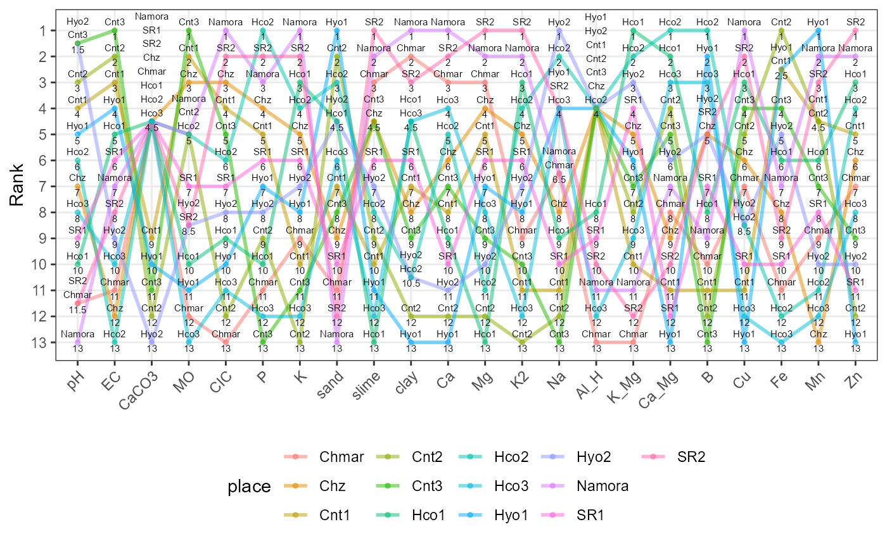

Create a slopegraph or bump chart from a data frame of ranks.
rankslopegraph(df, names, group, force.grouping = TRUE, line.size = 1, line.alpha = 0.5, line.col = NULL, point.size = 1, point.alpha = 0.5, point.col = NULL, text.size = 2, legend.position = "bottom")
| df | A data frame of records. |
|---|---|
| names | The name of the column having the names of the records. |
| group | Optional. The name of the column with a grouping variable. |
| force.grouping | If |
| line.size | Size of lines plotted. Must be numeric. |
| line.alpha | Transparency of lines plotted. Must be numeric. |
| line.col | Default is |
| point.size | Size of points plotted. Must be numeric. |
| point.alpha | Transparency of points plotted. Must be numeric. |
| point.col | Default is |
| text.size | Size of text annotations plotted. Must be numeric. |
| legend.position | Position of the legend in the plot. |
The slopegraph as a ggplot2 grob.
Tufte ER (1986). The Visual Display of Quantitative Information. Graphics Press, Cheshire, CT, USA. ISBN 0-9613921-0-X.
library(agricolae) data(soil) dec <- c("pH", "EC") inc <- c("CaCO3", "MO", "CIC", "P", "K", "sand", "slime", "clay", "Ca", "Mg", "K2", "Na", "Al_H", "K_Mg", "Ca_Mg", "B", "Cu", "Fe", "Mn", "Zn") soilrank <- rankdf(soil, increasing = inc, decreasing = dec) soilrank#> place pH EC CaCO3 MO CIC P K sand slime clay Ca Mg K2 Na Al_H K_Mg #> 1 Namora 13.0 7 4.5 5.0 1 3 1 13.0 2.0 1.0 1 2 2 6.5 11 11 #> 2 Hyo1 5.0 4 10.0 11.0 10 7 8 1.0 11.0 13.0 13 7 8 4.0 4 6 #> 3 Hyo2 1.5 9 13.0 8.5 8 8 7 4.5 7.0 10.5 11 10 7 1.0 4 3 #> 4 SR1 9.0 6 4.5 7.0 7 6 6 10.0 6.0 6.0 10 6 6 10.0 9 4 #> 5 SR2 11.5 8 4.5 8.5 2 2 2 12.0 1.0 3.0 2 1 1 4.0 10 12 #> 6 Cnt1 4.0 3 9.0 2.0 4 5 10 7.0 10.0 7.0 8 5 11 11.0 4 10 #> 7 Cnt2 3.0 2 12.0 5.0 12 9 13 2.0 9.0 12.0 12 12 13 12.0 4 8 #> 8 Cnt3 1.5 1 11.0 1.0 5 13 11 8.0 4.5 9.0 7 9 10 13.0 4 7 #> 9 Chz 7.0 12 4.5 3.0 3 4 5 9.0 4.5 8.0 6 4 5 8.0 4 5 #> 10 Chmar 11.5 11 4.5 12.0 13 11 9 11.0 3.0 2.0 3 3 9 6.5 13 13 #> 11 Hco1 10.0 5 4.5 10.0 9 10 3 4.5 13.0 4.5 9 13 3 9.0 8 1 #> 12 Hco2 6.0 13 4.5 5.0 6 1 4 3.0 8.0 10.5 5 11 4 2.0 4 2 #> 13 Hco3 8.0 10 4.5 13.0 11 12 12 6.0 12.0 4.5 4 8 12 4.0 12 9 #> Ca_Mg B Cu Fe Mn Zn #> 1 7 9 1.0 7.0 2.0 2 #> 2 13 2 13.0 2.5 1.0 13 #> 3 6 5 8.5 5.0 10.0 10 #> 4 12 7 10.0 10.0 8.0 11 #> 5 10 5 2.0 9.0 3.0 1 #> 6 11 11 11.0 2.5 4.5 5 #> 7 4 12 5.0 1.0 4.5 12 #> 8 5 13 4.0 4.0 7.0 9 #> 9 9 5 6.0 8.0 13.0 6 #> 10 8 10 7.0 11.0 9.0 7 #> 11 2 8 3.0 6.0 6.0 3 #> 12 1 1 8.5 12.0 11.0 4 #> 13 3 3 12.0 13.0 12.0 8soilslopeg <- rankslopegraph(soilrank, names = "place") soilslopeg